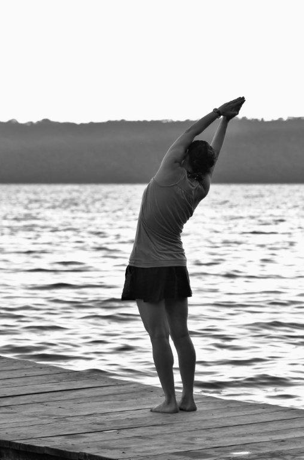

Welkom op de website van Pure Essence.
Kom genieten van de pure natuur in al haar weelderigheid en
creëer zo zelf een mooie balans tussen jouw innerlijke en uiterlijke schoonheid.
Ik adem in en kom tot rust,
ik adem uit en ik glimlach.
Thuis gekomen in het nu
wordt dit moment een wonder.
Mijn naam is Tanja en ik neem je graag mee naar de wondere wereld van de 5 elementen:
hout, vuur, aarde, metaal en water.
De natuurlijke, actieve en energetische producten van Phyto 5 die ik bij de verzorgingen gebruik, zijn gebaseerd op de eeuwenoude kennis van de Chinese geneeskunde.
Alle 5 de elementen hebben hun eigen werking. Is een element uit evenwicht, kan je het terug aanvullen dankzij de kracht van de andere elementen en zo kom je weer helemaal in
harmonie.
Om jou de optimale verzorging te kunnen bieden, werk ik vanuit mijn gevoel en hart. Het enige dat jij hoeft te doen is een afspraak maken en doorgeven hoeveel tijd je wilt
komen genieten. Op het moment van de afspraak bekijken we samen welke verzorging op dat moment het beste in jou naar boven haalt. Het ene moment kan dat een drainage zijn
waardoor je lymfesysteem beter zal gaan werken, het andere moment heeft je huid misschien meer nood aan een diepe reiniging of juist vooral ontspanning.
De natuur, gezondheid en een goede balans tussen lichaam en geest staan bij mij centraal.
Op verschillende manieren help ik jou om deze balans te zoeken.
Tijdens de behandelingen in mijn praktijk maak ik gebruik van chromatherapie. Dankzij de helende kracht van deze zuivere lichtstralen, behandel ik met gekleurd licht bepaalde
reflex- en acupunctuurpunten.
Chromatherapie werkt ondersteunend en brengt zo verbetering in de elasticiteit van de huid. De energiecentra die zich in ons lichaam bevinden, worden op die manier gezuiverd
en versterkt.
In combinatie met de Biodrainer, worden alle afvalstoffen sneller uit het lichaam gevoerd.
Dit resulteert in een betere werking van zowel lichaam als geest.
Je zal stralen als nooit ervoor en bruisen van energie!
Ook de innerlijke schoonheid krijgt aandacht.
Bij mijn yogalessen gaan we verder met het ontwikkelen en behouden van een balans tussen lichaam en geest, tussen inspanning en ontspanning.
